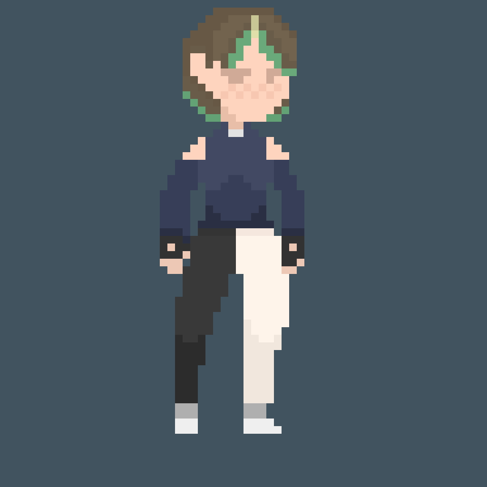
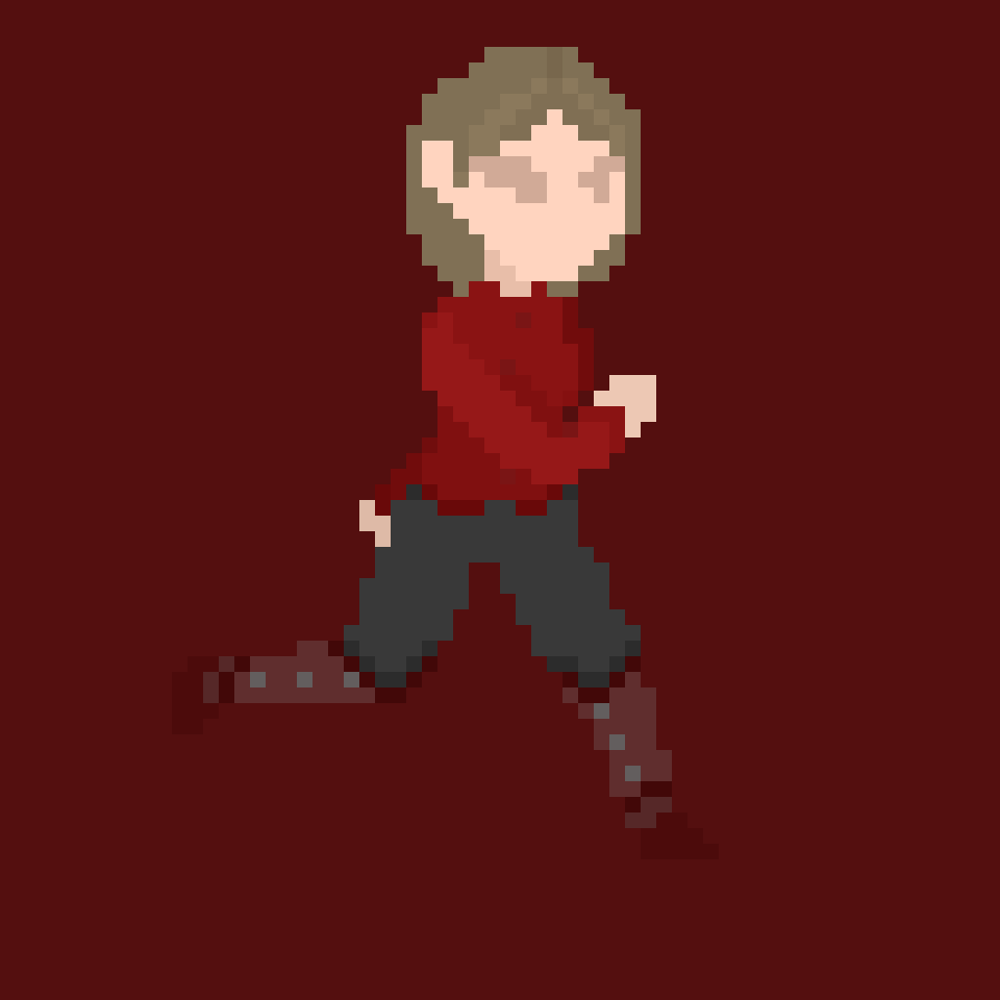

¡Cada Semana Hay uno nuevo!
Este artículo fue escrito por Joab Díaz.
Muy bien me gustaría tratar este tema porque siento que es interesante ver la ruta que tomo el pixel art por el tiempo y como este estilo jamás desapareció, Bienvenidos a Yo Escribo de Informática recuerden que se pueden suscribir en cualquier momento al blog para así obtener artículos de mayor duración y ojo de temas que no solemos tratar aquí en la sección gratuita del Blog recuerden 0.99$ al mes, esto nos ayuda a hacer todo esto posible ahora sin más rodeos veamos la trayectoria de este estilo por los años y veamos porque muchos creen que este estilo murió.
Solo para aclarar un “Sprite” como comúnmente es conocido es un recurso visual que se usa en el Desarrollo de juegos para hacer Escenarios, Personajes, Enemigos entre muchos otros, oh en pocas palabras un Sprite puede ser desde el personaje que usa el jugador hasta el escenario al completo de un videojuego.
De vuelta en los 90´s Nintendo lanza al mercado la sucesora de la Nes la Snes esta aparte de ser más potente en general tenía características nuevas también recordemos que las Sprites ya tenían más detalle que la Nes y que sobre todo en los cartuchos, ahora los desarrolladores podían pedir a Nintendo su nuevo Chip de efectos especiales el famoso SuperFX este Chip en pocas palabras podía estirar sprites, rotarlos y escalarlos entre muchas otras cosas que ah efecto práctico para este articulo solo nos interesa que este Chip era capaz de simular el 3d en efecto la Snes ya tenía juegos en “3d” sin embargo esto era un truco del SuperFX ya que en realidad solo da la ilusión de la tercera dimensión pero en realidad el juego sigue siendo 2d. Aunque no todos seguían esa regla algunos de los juegos que usaban el SuperFX si usaban modelos 3d, aunque muy limitados para la época véase por ejemplo al Star Fox. Muy bien y ¿a qué quiero llegar con todo esto? Pues bueno recordemos que la generación de la Snes en todos sus juegos usaba el Pixel Art fue por así decirlo la primera época dorada del mismo tiempo más tarde en el 96 Nintendo lanza la Nintendo 64 que en efecto ya podía mostrar gráficos en 3d aunque a mi parecer salió algo tarde ya que Sony con su Playstation 1 ya la habían lanzado antes que Nintendo su 64 esto créanlo oh no le comió parte del mercado a Nintendo sobre todo teniendo en cuenta que su precio era más accesible en fin por aquella época todo el foco de atención estaba puesto en la nueva dimensión las famosas “3d” todos pensaban que un juego 2d en aquella época ya era algo anticuado y bueno no se le dio mayor importancia a juegos en 2d con Pixel Art en esa época todos decían “Es el Fin del Pixel Art” pero que equivocados estaban.
En la época de la Playstation 1 y la Nintendo 64 salieron un montón de juegos en 2d con Pixel Art ya que eran más sencillos de desarrollar y en general se necesitaba de menos tiempo para desarrollar estas experiencias y otros juegos 2d también hacían uso inteligente de las 3d para que sus escenarios tuvieran más vida y se sintieran más complejos uno de los casos más famosos es el de Castlevania Symphony of the Night. Que hacía uso inteligente de las 3d para darle más vida a su experiencia y de esa forma enriquecerla más y darle más vida oh hacer más atractivo al Pixel Art en aquel momento sin embargo no era suficiente, recordemos que para la Playstation 1 por su facilidad para programar en ella y el bajo costo de los discos dio como resultado que muchos Desarrolladores la prefirieran antes que la 64 entonces sobre todo en el mercado Japones la Playstation 1 recibió muchos juegos en 2d con Pixel Art sin embargo la mayoría de estos son desconocidos.
Llegamos a la época de la Playstation 2 en el 2000 y años más tarde también a la época de la Playstation Portable en el 2004 y todo el foco de atención está en los juegos con gráficos complejos oh directamente realistas más tarde en la época de la Playstation 3 sin embargo ahora más fácil que antes hacer juegos 2d con Pixel Art ya está al alcance de personas normales, por aquel tiempo los Desarrolladores Independientes no eran tan conocidos como hoy en día lo son sin embargo ya había gente trabajando en experiencias hechas por 1 sola persona y por ende los gráficos en 2d y estilo Pixel Art son ideales ya que una persona normal incluso si no es Artista puede llegar a hacer un Pixel Art decente para su proyecto y encima Sony apoyando a los Desarrolladores Independientes con la Psp para que les sea más fácil es el escenario ideal para que muchos Desarrolladores Independientes sacaran sus títulos y por ende la Psp recibió muchos juegos en 2d con estilo Pixel Art uno de los más famosos fue Cave Story que si bien primero salió para pc también tuvo un port para Psp.
Mas tarde en la época de la PsVita en el 2011 está consola recibió muchos juegos independientes y bastantes de ellos eran en Pixel Art, muy bien hasta ahora vemos que el estilo Pixel Art nunca ha muerto como tal siempre hay Desarrolladores que regresan a este estilo ya sean independientes oh incluso Desarrolladores de empresas grandes sacando recopilatorios de sus juegos clásicos que hasta este punto podemos ver que el estilo Pixel Art si bien paso a segundo plano nunca ha muerto.
Y llegamos a la actualidad que desde 2000 el Desarrollo de Videojuegos paso de ser algo más privado y solo para empresas ah algo más publico gracias a motores de aquella época como Game Maker oh Unity que si bien Game Maker ya había salido desde 1999 no era tan popular y Unity que recién salió en 2005 gracias a estos y otros que había por la época muchas personas normales que querían dedicarse al Desarrollo de Videojuegos pudieron dar sus primeros pasos en la industria gracias a estos motores y como es de esperar el estilo Pixel Art es uno de los estilos más usados por los Desarrolladores Independientes que por su facilidad y accesibilidad es más sencillo que programar algo totalmente en 3d eso sí que no todos los Desarrolladores Indie hacían juegos 2d.
Muy bien como hemos podido ver este estilo siempre ha estado vigente entonces ¿porque hay gente que cree que el estilo Pixel Art murió? Esto es bastante sencillo de responder pues pienso yo que estas personas ven en el estilo Pixel Art algo arcaico, algo viejo y no muy sorprendente y/o simple y bueno no les gusta, sin embargo, el estilo Pixel Art jamás murió es mas en la actualidad no solo el estilo Pixel Art ya tiene otra época de oro sino que incluso la música del estilo Lo-Fi se inspira de lo antiguo para traerlo de nuevo a relucir entonces como podemos ver el estilo Pixel Art no murió y hoy en día es muy usado por Indies para darle vida a sus juegos.
Muy bien hemos llegado a la sección Bonus donde te diré como puedes hacer pixel art.En la actualidad hay muchos Softwares para hacer pixel art si te gusta el estilo y quieres aprender a hacerlo puedes pagar en Steam por AseSprite que para dejarlo claro es el mejor programa para hacer pixel art sin embargo no es gratuito, si quieres empezar y ver si esto es lo tuyo puedes revisar Pixel Studio que es totalmente gratis y que también se encuentra en Steam.
Ya por último les dejo un pixel art que su servidor hizo por un lado tenemos a Cero y por otro a Mary, eso es todo por hoy chicos nos vemos.
Esta Página es solo una muestra. Y lo de abajo es un Sprite
 La tecnología actual de la generación de Frames con
IA y sus desventajas -27/01/20??
¿Qué es el Copyleft? -19/06/20??
¿La Generación actual de Graficas vale la pena?
-29/07/20??
¿Qué es y como implementar el Código Limpio?
-01/09/20??
¿La tecnología de la IA es mala? -08/06/20??
¿Una idea pequeña es mejor que una Grande?
-08/06/20??